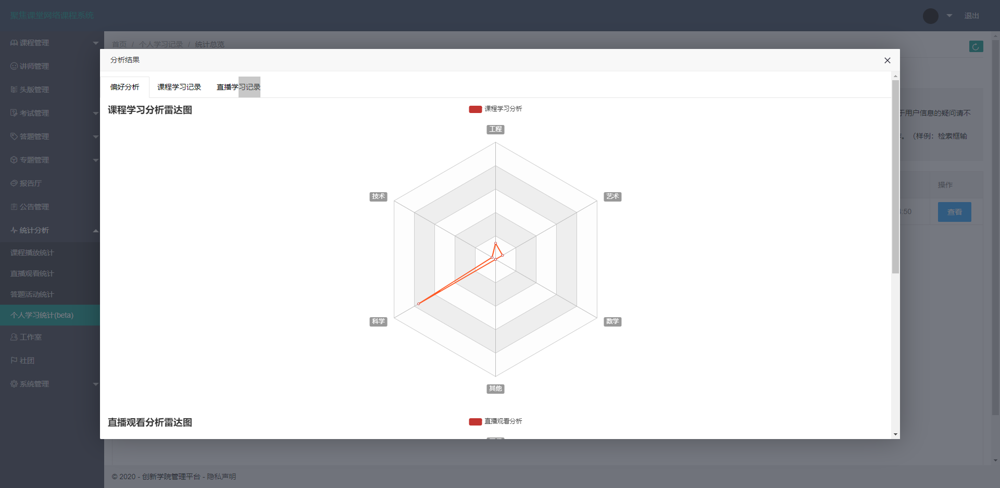

刚刚过去的7，8月份，参与了三个项目，其中包含一个规模较大的系统。因为之前对高并发系统的知识基本停留在理论知识层面，没有多少实战经验，通过此项目，或论证或推翻了一些以往的知识，这里我想简单分享一下。
我们都知道，关于高并发系统的设计，思路有很多，做法也不尽相同，对高并发的定义也不一样。提到高并发，这里，我想先简单列举几个和我们生活十分接近的例子
1.在微博中，明星动辄拥有几千万甚至上亿的粉丝，你要怎么保证明星发布的内容让粉丝实时地看到呢？
2.淘宝双十一，当你和上万人一起抢购一件性价比超高的衣服时，怎么保证衣服不会超卖？
3.春运时我们都会去 12306 订购火车票，以前在抢票时经常遇到页面打不开的情况，那么如果你来设计 12306 系统，要如何保证在千万人访问的同时也能支持正常抢票呢？
咳咳，当然，我们遇到的情况和上面三个例子比起来，就是小巫见大巫了，但其中会有一些交叉的技术要点，比如，模型设计，分布式部署，缓存，队列，cdn等等
我就从我们这次实际的项目，来分别介绍下吧。
一、系统结构
最开始，我们的项目在设计之初，完全没有考虑到高并发的情况，因为这本来的定位就是一个简单的内容展示系统，唯一不同的是会有一些视频资源在里面，充其量算是个小型的视频点播系统。因为开始的开发周期很短，所以也谈不上架构设计，就是最简单的数据库+网站系统的结构。
随着用户量的增加，我们发现，单体应用的结构已经无法支撑，便对系统进行了横向的扩展，进行了分布式的部署，同时引入了Redis作为中间数据缓存层。
再后来因为我们的系统同时支撑着多个省份的视频直播和点播服务，直播走的是云服务的带宽，不会对系统造成过高的负载，而点播则是我们自己的带宽，大量的用户在观看视频的时候会占用很高的带宽，导致业务系统原本的数据交互延时过高。
为此，我们再次在原有系统结构的基础上进行了拓展，增加了CDN和客户端缓存机制，将视频资源同步到CDN网络，设定访问量阈值，当访问流量过大时，视频资源切换到CDN线路，较小时则使用本地网络访问（之所以没有完全同步到CDN也是基于流量成本和公司一些内部制度的考虑）。
通过下面的系统结构图，可以看到这次项目整体的架构变化。
除了整体的设计，我们的业务系统在代码结构上也要注意分层，不能因为图写作方便，而把原本应该在数据逻辑层实现的东西放到业务逻辑层。分层的设计可以简化系统设计，让不同的人专注做某一层次的事情，而且分层之后可以做到很高的复用也可以让我们的系统更容易做横向的扩展。
二、缓存
其实缓存数据库的应用现在已经非常普遍了，比较流行的就是memorycache和redis，memorycache我不熟，只是在几年前做过一个thinkPHP的项目，短暂的接触过，常用的还是redis。
我们在项目中的缓存应用目前主要是2块
1是把用户登录的session存到了redis，为了解决分布式部署后的session共享问题，还有就是
2是一些常用的变量，比如第三方平台的授权token都是有一定的有效期的，每次访问都去请求一次不太合理，便将其存入了redis，并设定过期时间，方便使用
主要是这两个方面的应用，可以说，并没有完全发挥出缓存数据库的能力吧，因为我们的业务系统还是更加依赖关系数据库，这也是后续需要继续优化的一个方向。
比如，因为我们的主要业务模型设计的不算简单，甚至可以说有些复杂，所以在执行一些查询操作的时候，是比较耗费资源的，目前我们的处理方式是，采用了客户端的会话存储，因为这些数据的增删并不频繁，所以通过类似Cache-Aside（旁路缓存）的机制，进行客户端缓存，在一定程度上缓解了数据库的访问压力，但仍然有很大的提升空间。
因为关系型数据库的QPS一般是1500次/秒左右，并发量高了以后，系统的延时就是非常明显，造成程序体验下降甚至系统出错。所以需要结合具体的业务模型，对热点数据进行缓存，防止大量的并发操作到达数据库层，从而提高系统的响应速度（因为缓存数据库的特殊结构使其读取数据的效率远远高于关系数据库）。
三、cdn
cdn是我们首次在项目中引入的一个新的业务处理方式，其实这也不是什么新鲜玩意儿。
CDN（Content Delivery Network/Content Distribution Network，内容分发网络）。简单来说，CDN 就是将静态的资源分发到位于多个地理位置机房中的服务器上，因此它能很好地解决数据就近访问的问题，也就加快了静态资源的访问速度。在大中型公司里面，CDN 的应用非常普遍，大公司为了提供更稳定的 CDN 服务会选择自建 CDN，而大部分公司基于成本的考虑还是会选择专业的 CDN 厂商，毕竟谁家也不是开矿的，阿里云、腾讯云、百度云等大厂都提供了响应的服务，如果你的服务部署在云上可以选择相应云厂商的 CDN 服务，这些 CDN 厂商都是现今行业内比较主流的。
那么CDN的在我们这次项目中最大的做用就是提供静态资源的加速，我们的点播视频，在上线前几天的时候，访问量都非常大，为了不影响主要业务的访问，我们使用了CDN，事实证明，该技术可以极大的缓解静态资源带来的带宽压力，如何更好的结合cdn来提高系统的效率，也是下一步要继续改进的方向。
需要注意的是，使用cdn来分摊静态资源产生的流量时，要注意监控流量情况，如果cdn的回源流量过高，或者过于频繁，则仍然无法起到抵御流量的效果，如下图分别展示了两种情况。
四、日志和数据统计
日志模块对于任何一个系统来说都是不可或缺的，日志也分为很多种，这里我们主要记录了两个大类，一个是系统日志，一个是业务日志。
系统日志主要是记录系统的访问，追踪，警告，出错和崩溃情况，通过日志组件来记录整个系统运行中产生的日志。
业务日志是涉及到具体业务而需要记录的内容，比如学习日志，定位日志，答题记录等等
在高并发的系统里，日志的作用尤为重要，因为高并发意味着产生的交互就会很多，而数据的交互会伴随产生大量的数据，这些数据需要被合理的整合，统计，进而分析出一些我们期望看到的结果。
比如，某个同学在我的系统里进行了一段时间的学习，那么我就可以通过分析他的学习记录，得出该学生更倾向于学习哪方面的知识，从而生成对应的统计图表，来直观的进行分析，可以简单看一下我们生成的统计图表

再深一层的话，我们可以通过整合分析算法，在用户访问我的系统时，根据用户的学习喜好，来智能的进行学习内容的推荐，达到“千人千面”的展示效果，目前我们基本完成了第一步，接下来就是编写推荐算法。
五、分库分表
这次我们并没有做关系数据库的分库和分表操作，一是这方面的经验不足，二是库表结构在设计之初也没有考虑到要分库分表的情况。一般来说，已经开发到一定阶段的系统，如果要从最开始没有分库分表的设计，调整成支持分库分表，一定会消耗非常多的时间和精力，而且结果也不一定能达到预期。所以如果我们的系统定位的就是一个大规模的系统，那么在模型设计阶段，就要考虑分库分表的情况。
我就提一个点吧，这点也是我们为后续进行一些分表的操作所准备的。
就是我们无论是分库也好还是分表也好，总要有一个划分的标准，常见的是通过取余或者生成散列值的操作来进行，考虑到业务系统的复杂性和通用性，我们对主键的设计要格外注意。在单库单表的场景下，我们可以使用数据库的自增字段作为 ID，因为这样最简单，对于开发人员来说也是透明的。但是当数据库分库分表后，使用自增字段就无法保证 ID 的全局唯一性了。而数据库还有一个UUID（GUID）类型，不依赖任何第三方库，即可生成，在性能和可用性上都很好，但是，主键的设计最好还是具备单调递增的特性，所以UUID也不满足需求。这里我们需要设计一个发号器，来实时的生成主键id，这点我就不多说了，我们采用的twitter提出的Snowflake算法，这个算法大家可以去百度一下，他能很好的解决以上两种类型所带来的问题。
当然也有一个缺陷，当我们的前端页面需要使用这个id的时候，注意进行下字符转换，因为js本身不支持高于17位的数字，这点注意一下就行。
好了，就先说这些吧，感觉写的有些乱，其实关于高并发系统的设计还有很多内容，比如他的另外两个兄都，高性能和高可用，合在一起统称为“三高”，其中单拎出任何一个都能有很长很长的篇幅来介绍，但纵使千言万语，如果不亲身经历，终归是纸上谈兵，能真正的参与一个有挑战性的项目，和团队一起攻克一个个难关，这个打怪升级的过程，才是最宝贵的经历。